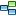

Call Graph |
 |
The call graph shows a statically calculated
thread resolved
call graph for selected nodes. The nodes are methods, classes, packages, or Java EE components,
depending on the selected aggregation level.
To calculate a call graph, click  Generate graph in the tool bar or select View->Generate graph from JProfiler's main menu. If a graph has been calculated, the context menu also provides access to this action. Before a graph is calculated, the call graph wizard is brought up. The resulting graph is static and can be re-calculated be executing Generate graph again. The call graph wizard remembers your last selection. |
| |
The call graph has the following properties:
By default, the call graph only shows the direct incoming and outgoing calls of the initially selected nodes. You can expand the graph by double clicking on any node. This will expand the direct incoming and outgoing calls for that node. Selective actions for expanding the graph are available in the toolbar, the View menu and the context menu:
If applicable, an node has plus signs at the left and the right side to show or hide
calling and called nodes. The controls at the left side are
for calling, the controls at the right side for called nodes. The plus signs have the same effect
as the
You can hide nodes by selecting them and pressing the delete key. You can select
multiple nodes and delete them together. Alternatively, you can select the
If you delete methods, the call graph may contain a number of unconnected branches.
To clean up the graph, select a method on the branch that should be retained and select the
The call graph offers a number of navigation and zoom options. |
 Show calling nodes
Show calling nodes
 Show called nodes
Show called nodes
 Add nodes to graph,
to add other unrelated nodes to the graph.
The
Add nodes to graph,
to add other unrelated nodes to the graph.
The  remove nodes from graph
action from the graph toolbar or the context menu.
remove nodes from graph
action from the graph toolbar or the context menu.
 cleanup unconnected methods
action from the graph toolbar or the context menu. The "remove all but selected nodes" action in the
context method allows you to trim the graph to a few selected nodes.
cleanup unconnected methods
action from the graph toolbar or the context menu. The "remove all but selected nodes" action in the
context method allows you to trim the graph to a few selected nodes.